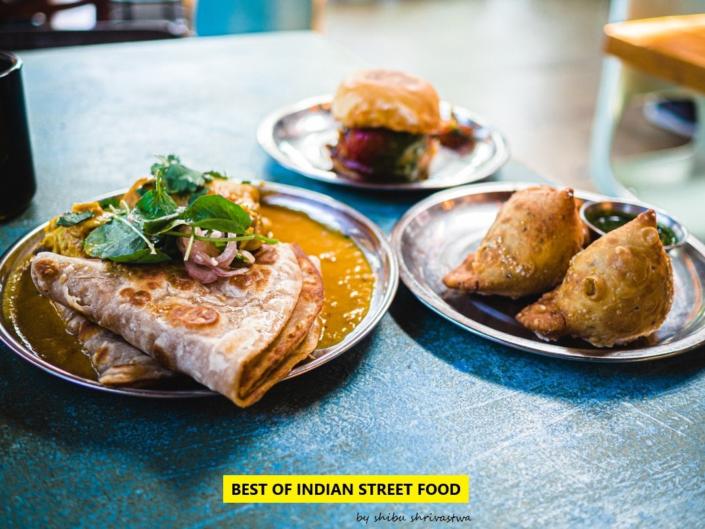

Faster
No parallax
Slower


Indian street food is as diverse and colorful as our culture and rituals. This is the thing that varies from state to state and we take the greatest pleasure and pride of. Whether it’s an office break or chilling time during tuition, no matter what age group, we Indians just can’t resist the urge of digging into these not-so-healthy, yet so-scrumptious roadside delights. The vast variety can’t even be categorized state wise as every city has its own specialty. Whether sweet or salty, Street Food in India offers it all. So keeping this in concern we gonna jot down all the ubiquitously known Indian Street Food across India that would leave you drooling unattractively.